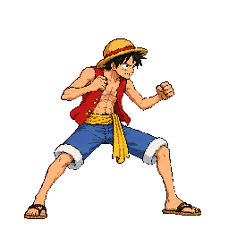
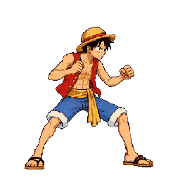

The user approved down v03 and getup v03 via Claude relay #10, quote “Approved”. Astra body/scale PASSed within measurement uncertainty on the exact 22-animation, 100-frame pack. Special remains held and absent; runtime contact and grounding are not certified.
Playback from the actual pack
Loading actual pack…
The canvas reads the exact sheet and frame timing from ../anims.json. Down is a one-shot (80ms, 420ms); getup is a one-shot (70ms, 60ms, 60ms, 80ms, 70ms).
Pack hashes, source-call inventory, and audit evidence
Actual pack: 48 colors; sheet SHA-256 0fc2f4a87b9c01991271209c04df2ee3913799ad626a9cd2a68d0f91fb54d122; metadata SHA-256 dc679a50fe5a7536c76be12272da040a36495a105dda6e3028d7abf96777598f. Packer selected down v03 at bodyHeight 106 and getup v03 at bodyHeight 209, both with pack scale 1. Special is the only missing CORE animation.
Call inventory: down 2/3, getup 2/3, special 4/4. Down v03 and getup v03 are deterministic reassemblies from preserved sources, not new generation calls. Special call 4 failed input validation before generation because six refs exceeded the five-ref limit; no special v02 output exists.
Every image is shown in a horizontally scrollable strip at native 256×256 cell density.
Luffy approved neutral

Luffy approved combat

Luffy approved idle f0
Approved Gojo neutral
Approved Gojo combat
Approved Killua neutral
Approved Killua combat
Approved Naruto neutral
Approved Naruto combat
Approved Sasuke neutral
Approved Sasuke combat
Rejected v01/v02 and user-approved v03 cells — native 256px
Each version is an exact 256×256 cell at the same density. V01 cells are preserved extractions from the earlier diagnostic; v02 cells are the frozen earlier candidate fixture; v03 cells are exact copies from the final audited actual atlas. The user approved only down/getup v03.
Measured changes and remaining review
Special v01 remains held and absent. Its authorized fourth request failed before generation; no source for v02 exists. No art/design approval is implied by the technical audit. Review the exact versioned images in the Luffy review rows; respond with direct image approval or feedback.
This gallery reads the actual selected gameplay atlas. Existing user-accepted placement clips and the Claude beamFire arm-continuation exception are documented separately in the final audit and REVIEW_ROWS.


 Luffy approved neutral
Luffy approved neutral Approved Gojo neutral
Approved Gojo neutral Approved Gojo combat
Approved Gojo combat Approved Killua neutral
Approved Killua neutral Approved Killua combat
Approved Killua combat Approved Naruto neutral
Approved Naruto neutral Approved Naruto combat
Approved Naruto combat Approved Sasuke neutral
Approved Sasuke neutral Approved Sasuke combat
Approved Sasuke combat